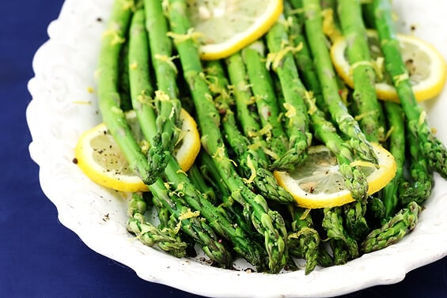

Lemon Pepper Asparagus

An easy to prepare and zesty side to any dish!
Ingredients
1kg of uncooked Asparagus
Olive oil
Lemon pepper seasoning
Lemon
Steps
1. Cut bottom ends off of asparagus.
2. Slice lemon thinly.
3. Place asparagus onto baking sheet.
4. Put 1 tbsp of olive oil and spread on asparagus.
5. Season asparagus with lemon pepper and place lemon slices onto asparagus.
6. Bake at 425 degrees for 12-15 minutes and enjoy!